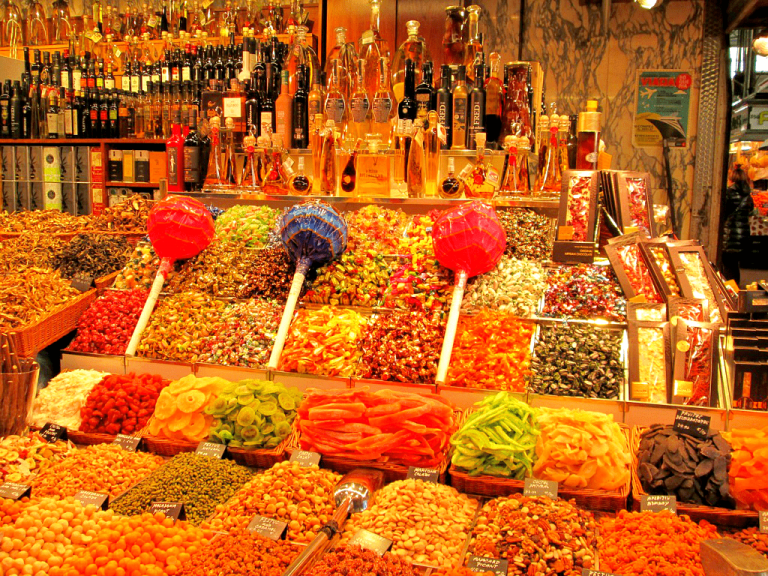

Barcelona, the capital of Catalonia, is a city that you will discover to be amazing at every turn (without being accused of subjectivity). Its openness to the Mediterranean coastline, its numerous beaches or coves (those little bays sheltered by spectacular cliffs), its enviable architecture and its multitude of cultural attractions make the capital of Catalonia one of the most desirable tourist destinations. Here you can discover an amalgam of contrasts - from the medieval atmosphere of the Gothic quarter to Gaudi's avant-garde architecture; from the wide beaches, a little crowded in peak season, to the tranquillity you can find high up on Mount Montserrat.
The Sagrada Familia, the work of master Antonio Gaudi, needs little introduction; the Sagrada Familia is his most famous work and the most visited tourist attraction in Barcelona.
A UNESCO World Heritage Site, the Sagrada Familia offers an unforgettable experience to visitors and dominates the surroundings with its 18 towers towering above all the monuments; the construction started in 1883 as a Neo-Gothic church, but Antonio Gaudi wanted to create his signature surrealist art nouveau style. So he constantly changed the original plans, coming up with new ideas. Although it was originally planned to take between 10 and 15 years to be completed, the building has not been finished to this day and no one knows when it will be finished. The Nativity scene facade impresses from the entrance, and the elegant and imposing interior has brightly coloured stained glass windows that let the light flood in, creating a magical atmosphere. Gaudi captured the essence of his architectural masterpiece when he described it as a "work that is in the hands of God and the will of the people".
We recommend you to buy your tickets in advance on the official Sagrada Familia website, where you will be assigned a specific time for entry and will avoid long queues on some days (did you think we were joking when we said it is the most visited tourist attraction in Barcelona?).
The entrance ticket costs 15 euros/person, and if you want a guided tour, the ticket is 34 euros/person.
At the exit you will find a small park, where you can capture the masterpiece in the best angles, photos only good to post on Facebook or Instagram.
Very close to the Sagrada Familia is the Arc de Triomphe, a monument worth seeing, as the photo below promises.
Start with Plaza Catalunya, a beautiful square, considered by many to be the centre of Barcelona; it is where the old city centre (the Gothic quarter, Raval) meets the new quarter (Eixample); it is also the site of the most beautiful romantic 12th century monastery - Santa Anna.
From Plaza Catalunya you walk along the most famous pedestrian alley - La Rambla - always crowded, seemingly chaotic, but always with a special charm. You'll find that it's surrounded by numerous restaurants, florists, shops and outdoor cafes; here you can stop for a few minutes to taste some tapas (a traditional all-you-can-eat snack) or quench your thirst with a local beer or sangria (a wine-based cocktail). La Rambla is more than just a tourist attraction in Barcelona, it's the perfect place to feel the vibe of the city. In the evening groups of friends or families come for a paseo on the Rambla to enjoy the fresh air and lively atmosphere.
This is also the meeting place for artists, so you can buy a painting of famous Barcelona landscapes or try your hand at caricature (they come out pretty good, we say). Surprises abound at every turn!
At Boqueira you will see many locals doing their daily shopping; it is probably the liveliest place in Barcelona. La Boqueira market is also probably the most colourful market selling fruit, vegetables and other specific food products. You can't say you've arrived here without tasting a zumo de fruta (fruit juice).
We advise you not to rush in like in Obor Square but to wander around a bit and admire the speculative entrance to the market first.

From La Boqueira, you can go straight to El Raval - a lively, colourful and lively neighbourhood with bars as well as a lively nightlife. We recommend it especially because here you can admire the sculpture "Gato de Botero". The main street is Rambla del Raval which you can contemplate sitting on a bench in the shade of palm trees and listening to the song of parrots (not everywhere you can have such an experience and yes, parrots have their own song!).
Portal de L'Angel - said to be the busiest pedestrian thoroughfare in Europe, this is also the shopping centre with the most shops and most expensive rents in Spain. We'd rather classify it as a Barcelona tourist attraction, because it's much called a "tourist attraction". However, don't miss a walk along Portal de l'Angel, whether you have money on your card or not - it's worth it at least because it lets you immerse yourself in the typical Catalan atmosphere, cosmopolitan and always in a specific vibe.
Guel Park can only be described as a fairy-tale place, a place where dreams are at home; a colourful, cheerful park, also included on the UNESCO World Heritage List, designed under the surrealist signature of Antonio Gaudi and laid out between 1900 and 1914, it features creative structures arranged in space and decorated with multicoloured ceramic fragments. Guell Park until recently had free access but today consists of two parts: the part including the art monuments, where you have to pay 7 euros per person and the part where you can walk freely but where you can not visit the monuments in the park, also very nice to see.
Entering the park (the monumental part) you will be greeted from the entrance by the impressive stairs decorated with multicolored ceramic pieces, as well as the ubiquitous reptiles, which have become a symbol in Barcelona. Walking up the stairs you will reach an impressive hall of columns, a panoramic plateau offering the most beautiful views of the city. Antonio Gaudi himself lived in the house that was to become his museum, and revered this relaxing spot above the bustling city.
Today, the Gaudi House Museum houses art objects, most of the decorative objects created by the artist and pieces of furniture. You can lose yourself in the park's alleyways full of architectural details, stop by one of the concerts you'll find (some areas of the park have great acoustics), or admire and photograph the parrots that find their roost in the park's palm trees. On your way out you will find quaint shops with hand-painted pottery, or any other souvenir to remind you of this wonderful place.